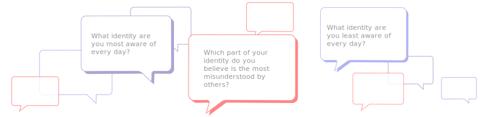

Identity Signs
To create positive social change, we have to learn about ourselves and the world around us. Social justice aims to create a more equitable world by changing existing systems of inequality.
This workshop aims to highlight how different identities may be more or less salient in different people's everyday lives. You will be examining your personal identities to see how your daily experiences affect how you perceive yourself and others.
Disclaimer: Your answers will only be visible to you during this activity.